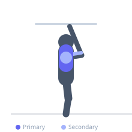
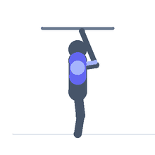

Exercise guide / Sternum Pull-Up / Gironda Pull-Up
Sternum Pull-Up / Gironda Pull-Up
The sternum pull-up, popularized by Vince Gironda, requires the lifter to pull the chest all the way to the bar rather than stopping when the chin clears it. The torso leans back throughout the movement, shifting emphasis from the lats to the lower lats, rhomboids, and rear deltoids. It demands greater scapular retraction than a standard pull-up and produces a unique contraction in the mid-back musculature.
Primary muscles
latissimus dorsi
rhomboid major
Secondary muscles
deltoid posterior
trapezius middle
biceps brachii long head
Stabilizers
teres major
transverse abdominis
Equipment
Pull-Up Bar (Doorframe)
Optional
Dip Belt


Starting position
- Hang from a pull-up bar with a shoulder-width overhand grip. Allow the body to hang fully with arms extended.
Setup
- Use a bar that allows full hang without the feet touching the floor. Lean the torso back slightly at the start.
Steps
- Step 1: Begin hanging with an overhand grip slightly wider than shoulder width.
- Step 2: Initiate the pull by depressing and retracting the scapulae.
- Step 3: Lean the torso back as you pull, aiming to bring the sternum — not the chin — to the bar.
- Step 4: At peak contraction, the torso is at approximately 30-45 degrees from vertical and the chest touches or nearly touches the bar.
- Step 5: Lower under control, maintaining the leaned-back position until arms are nearly extended, then return to full hang.
Coaching cues
- Bring your chest to the bar, not your chin
- Lean back as you pull
- Squeeze the shoulder blades together at the top
Breathing
- Exhale as you pull up toward the bar. Inhale during the controlled descent.
Range of motion
- Full hang at the bottom to chest contact with the bar at the top. The extended ROM distinguishes this from a standard pull-up.
Tempo
- 2-0-2-1 (2s pull, 0s pause, 2s descent, 1s hang reset)
Common mistakes
- Stopping when the chin clears the bar instead of pulling the chest to the bar
- Failing to lean the torso back, reducing mid-back activation
- Using momentum rather than controlled muscle contraction
Safety
- Requires substantial upper body pulling strength — build standard pull-up proficiency first
- Do not force the chest to the bar if shoulder mobility is limited
Training
- strength: 3–6 reps
- hypertrophy: 6–10 reps
- strength: 3–5 sets
- hypertrophy: 3–4 sets
- Rest: {'strength': 180, 'hypertrophy': 90}